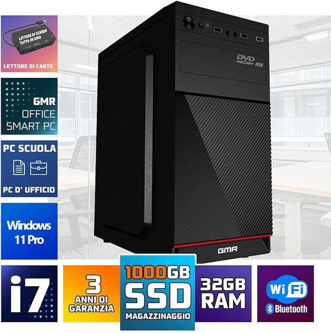

| info | photo | description |
| Ordinateur de bureau professionnel GMR Ultra i7 |  | Marque GMR Système opérateur Windows 11 Professionnel Modèle de processeur Core i7 Vitesse du processeur 3,4 GHz Taille du cache 1000 Go Description de la carte graphique Intégré Coprocesseur graphique Carte graphique Intel HD 4600 Capacité de stockage de la mémoire 1000 Go Utilisations spécifiques du produit Affaires, éducation, usage quotidien Type de conception d'ordinateur personnel Tour d'ordinateur |